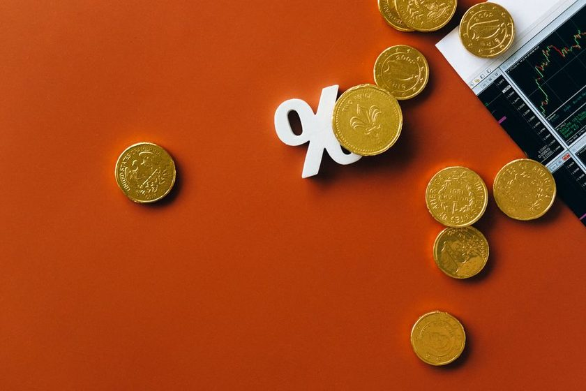

Selic no bolso: o que a taxa básica muda na sua poupança, financiamento e cartão
Quando a Selic sobe ou desce, o efeito chega no rendimento da poupança, no juro do cartão e no financiamento — veja como.

Tem gente que só ouve falar da Selic no noticiário e passa direto, achando que é assunto de economista. Só que essa taxa entra na sua vida de um jeito bem concreto: ela é a régua que outros juros do país usam como referência. Quando ela muda de patamar, o rendimento da sua poupança, o juro do cartão de crédito e a parcela de um financiamento se movem atrás — em geral com velocidades diferentes, mas na mesma direção.
O que é a Selic, afinal
A Selic é a taxa básica de juros da economia brasileira, definida periodicamente pelo Comitê de Política Monetária do Banco Central. Ela funciona como o "preço do dinheiro" para os bancos negociarem entre si no curtíssimo prazo. Na prática, é o parâmetro que baliza quase todo o crédito e todo o investimento em renda fixa do país: quando ela sobe, o crédito tende a ficar mais caro e a renda fixa mais atrativa; quando ela cai, o movimento tende a ser o inverso.
Não existe uma tradução automática e instantânea — cada produto financeiro reage com um atraso e uma intensidade próprios. Mas a lógica de fundo é essa: a Selic dá o tom, o resto da economia vai se ajustando.
A relação com o CDI
Boa parte dos produtos de investimento que você vê anunciados como "% do CDI" (CDBs, fundos DI, alguns títulos do Tesouro Direto ou CDB) usa o CDI — Certificado de Depósito Interbancário — como referência de rendimento. O CDI, por sua vez, acompanha de perto a Selic, quase andando junto dela. Por isso, quando você ouve "a Selic subiu", pode assumir que o CDI também tende a subir, e junto dele o rendimento de aplicações atreladas a ele.
Regra prática: Selic e CDI andam quase de mãos dadas. Se um sobe, o outro tende a subir também — e vice-versa. Não são a mesma coisa, mas para efeito de planejamento familiar, tratá-los como "andando juntos" já ajuda a entender o cenário.
O efeito no rendimento da poupança
A caderneta de poupança tem uma regra de rendimento própria, historicamente atrelada à Selic: em períodos de Selic mais alta, o rendimento da poupança costuma ficar mais próximo do teto da sua faixa histórica; em períodos de Selic mais baixa, tende a ficar mais próximo do piso. Isso significa que a poupança não é imune ao ciclo de juros — ela só reage de um jeito mais lento e mais "achatado" que outras aplicações.
Um erro comum é comparar a poupança apenas com o passado dela mesma, sem olhar o que outras opções de baixo risco estão pagando no mesmo período. Quando a Selic está em patamar mais alto, é comum que outras aplicações de renda fixa simples — como CDBs de bancos digitais e alguns títulos públicos — paguem mais que a poupança, mantendo perfil de risco parecido.
O efeito no juro do cartão de crédito (rotativo)
O crédito rotativo do cartão já é, historicamente, uma das linhas mais caras do mercado — e ele também responde ao ciclo da Selic, ainda que de forma menos direta que a renda fixa. Em ciclos de Selic mais alta, o custo do dinheiro para os bancos sobe, e esse custo tende a se refletir no preço do crédito ofertado ao consumidor, incluindo o rotativo e o parcelamento da fatura.
Na prática, isso reforça uma recomendação que já vale em qualquer cenário: evitar entrar no rotativo do cartão sempre que possível, e se cair nele, buscar sair o quanto antes — seja negociando com o banco, seja usando uma reserva já formada. Vale reler o artigo sobre reserva de emergência para entender por que ter esse colchão evita justamente cair nesse tipo de linha de crédito mais cara.
O efeito no financiamento (imóvel, veículo, consignado)
Financiamentos de prazo mais longo — imóvel e veículo, principalmente — também sentem o ciclo da Selic, mas de forma mais lenta, porque muitos contratos têm taxa fixada no momento da assinatura ou são corrigidos por índices próprios. Ainda assim, novas contratações tendem a refletir o custo de captação do banco no momento em que o contrato é fechado: em ciclos de Selic mais alta, taxas de novos financiamentos tendem a subir; em ciclos de queda, tendem a recuar.
Por isso, comparar propostas de financiamento em momentos diferentes do ciclo de juros pode dar a falsa impressão de que "o banco X é mais caro que o Y", quando na verdade o que mudou foi o cenário de juros entre uma cotação e outra.
| Produto | Reage à Selic? | Velocidade típica |
|---|---|---|
| Poupança | Sim, por regra própria | Lenta, regra fixa por faixa |
| CDB / Tesouro pós-fixado | Sim, via CDI | Rápida, quase imediata |
| Rotativo do cartão | Sim, parcialmente | Moderada |
| Financiamento novo | Sim, na contratação | Lenta a moderada |
| Financiamento já assinado (taxa fixa) | Pouco ou nada | — |
E os investimentos de renda fixa em geral?
De forma ampla, ciclos de Selic mais alta costumam favorecer quem está aplicando dinheiro em renda fixa pós-fixada (rendimento melhora) e desfavorecer quem está pegando crédito (custo sobe). Ciclos de queda tendem a inverter essa equação: crédito tende a ficar relativamente mais barato, e a renda fixa pós-fixada tende a render menos em termos absolutos — ainda que continue sendo, para o perfil conservador, uma opção mais previsível que aplicações de maior risco.
Vale reforçar: nada disso é previsão sobre para onde a Selic vai. É apenas a lógica de como cada produto costuma reagir, faixa a faixa, ao movimento que já aconteceu ou que está em curso.
Guardar dinheiro ou quitar dívida primeiro?
Uma dúvida recorrente é: "vale mais a pena aplicar meu dinheiro ou usar para quitar uma dívida?". A resposta muda com o ciclo de juros, mas o raciocínio de comparação é sempre o mesmo:
- Se o juro da dívida (rotativo, cheque especial, parcelamento sem desconto) está claramente acima do que qualquer aplicação seria capaz de render, quitar a dívida tende a valer mais a pena que deixar o dinheiro aplicado.
- Se a dívida tem juro baixo ou é subsidiada (alguns financiamentos habitacionais, por exemplo), pode fazer mais sentido manter uma reserva aplicada e pagar a dívida no ritmo combinado.
- Antes de qualquer decisão, olhe o seu score de crédito — ele influencia a taxa que você consegue negociar numa eventual renegociação.
Organizar essa comparação mês a mês fica mais simples quando você tem visibilidade de todas as contas e datas num só lugar — é justamente para isso que existe o app Bolso em Dia: ele reúne vencimentos e ajuda a visualizar onde o dinheiro está indo antes de decidir entre guardar ou quitar.
Conclusão
A Selic não é um número distante do noticiário — é o fio que conecta o rendimento da sua poupança, o juro do seu cartão e a parcela do seu financiamento. Entender a lógica (sem tentar adivinhar o próximo movimento) já ajuda bastante na hora de decidir se vale mais guardar, investir ou quitar uma dívida primeiro. E como o cenário muda com o tempo, vale revisitar essa conta periodicamente, sempre com a taxa vigente em mãos.